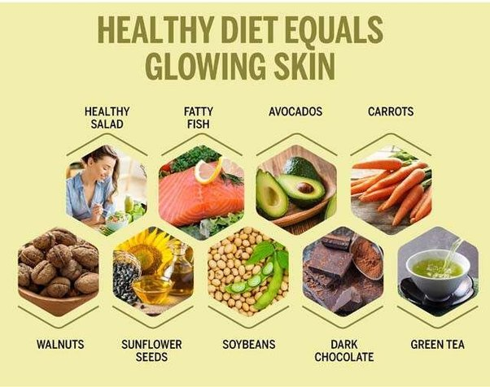

|
|

BENIFITS OF WATER
=> The human body can last weeks without food, but only days without water. The body is made up of 50-75% water. Water forms the basis of blood, digestive juices, urine and perspiration, and is contained in lean muscle, fat and bones.
=> As the body can’t store water, we need fresh supplies every day to make up for losses from the lungs, skin, urine and faeces (poo). The amount we need depends on our body size, metabolism, the weather, the food we eat and our activity levels.
=> Body water content is higher in men than in women and falls in both with age.
=> Most mature adults lose about 2.5 to 3 litres of water per day. Water loss may increase in hot weather and with prolonged exercise.
=> Elderly people lose about 2 litres per day.
=> An air traveller can lose approximately 1.5 litres of water during a three-hour flight.
=> Water loss needs to be replaced.
BENIFITS OF FRESH FRUIT & vegetable
=> Fruit and vegetables should be an important part of your daily diet. They are naturally good and contain vitamins and minerals that can help to keep you healthy. They can also help protect against some diseases.
=> Most Australians will benefit from eating more fruit and vegetables as part of a well-balanced, healthy diet and an active lifestyle. There are many varieties of fruit and vegetables available and many ways to prepare, cook and serve them.
=> Fruit and vegetables are best bought when they are in season. Otherwise try frozen or canned vegetables as they are just as nutritious and budget-friendly as well.
=> You should eat at least 5 serves of vegetables and 2 serves of fruit each day. Choose different colours and varieties.
=> If you are someone who doesn’t look forward to eating fruit or vegetables, start slowly with those you do like. Try serving, flavouring or cooking them in different ways. You can also disguise them in sauces, minced meals or curries.
=> Fruits and vegetables are low in fat, salt and sugar. They are a good source of dietary fibre, which can make you feel fuller for longer and prevent overconsumption of food. As part of a well-balanced, healthy diet and an active lifestyle, a high intake of fruit and vegetables can help you to:
. reduce obesity and maintain a healthy weight
- lower your cholesterol
- lower your blood pressure.
BENIFITS OF NUTS
=> Nuts are highly nutritious. One ounce (28 grams) of mixed nuts contains
- Calories: 173
- Protein: 5 grams
- Fat: 16 grams, including 9 grams of monounsaturated fat
- Carbs: 6 grams
- Fiber: 3 grams
- Vitamin E: 12% of the RDI
- Magnesium: 16% of the RDI
- Phosphorus: 13% of the RDI
- Copper: 23% of the RDI
- Manganese: 26% of the RDI
- Selenium: 56% of the RDI
=> Some nuts are higher in certain nutrients than others. For instance, just one Brazil nut provides more than 100% of the Reference Daily Intake (RDI) for selenium (2).
=> The carb content of nuts is highly variable. Hazelnuts, macadamia nuts, and Brazil nuts have fewer than 2 grams of digestible carbs per serving, while cashews have almost 8 digestible carbs per serving.
=> That being said, nuts are generally an excellent food to eat on a low-carb diet.
BENIFITS OF YOGA
=> Cardiovascular system (heart and arteries) – asanas are isometric, which means they rely on holding muscle tension for a few seconds to several minutes. This improves cardiovascular health and circulation. Studies show that regular yoga practice may help normalise blood pressure.
=> Digestive system – improved blood circulation and the massaging effect of surrounding muscles improves and promotes normal digestion.
=> Musculoskeletal – joints are moved through their full range of motion, which encourages mobility and eases pressure. The gentle stretching releases muscle and joint tension, and stiffness, and also increases flexibility. Maintaining many of the asanas encourages strength and endurance. Weight-bearing asanas may help prevent osteoporosis, and may also help people already diagnosed with osteoporosis (if practiced with a qualified yoga professional and guided by an allied health professional). Long-term benefits include reduced back pain and improved posture.
=> Nervous system – improved blood circulation, easing of muscle tension and the act of focusing the mind on the breath all combine to soothe the nervous system. Long-term benefits include reduced stress, anxiety and fatigue, better concentration and energy levels, and increased feelings of calm and wellbeing.
BENIFITS OF DARK CHOCOLATE
=> The percentage of cocoa listed on the chocolate refers to the percentage of all ingredients that the cacao plant makes up. That means a dark chocolate product with a higher percentage of cocoa may have a larger amount of the nutrients that deliver its benefits.
=> These beneficial compounds can include:
- flavanols
- polyphenols
- theobromine
=> It is important to note that cocoa losesTrusted Source some of its polyphenol compounds as it is processed into cocoa butter, cocoa powder, and chocolate through the manufacturing processes. Processing cocoa not only reduces some of its most beneficial compounds but may also add sugar, milk, and cocoa butter, a processed form of the cocoa bean.
=> Cocoa has been associated with health benefits that may includeTrusted Source:
- reducing free radicals
- improving blood flow
- lowering blood pressure
- lowering “bad cholesterol”
- reducing inflammation
- reducing insulin resistance
- improving the brain’s ability to make new connections between neurons
- increasing microbiome diversity